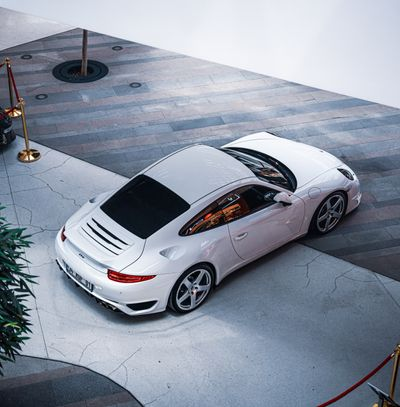

Comparación de modelos
| Marca | Modelo | Motor | Potencia |
|---|---|---|---|
| Ferrari | SF90 | V8 | 986 HP |
| Lamborghini | Revuelto | V12 | Más de 1,000 HP |
| Porsche | 911 | Flat-6 | Dependiendo de la versión |
Ingeniería alemana y alto rendimiento.

El Porsche 911 es uno de los modelos deportivos más reconocidos de la industria automotriz.
PIP representa una filosofía enfocada en el rendimiento.
| Marca | Modelo | Motor | Potencia |
|---|---|---|---|
| Ferrari | SF90 | V8 | 986 HP |
| Lamborghini | Revuelto | V12 | Más de 1,000 HP |
| Porsche | 911 | Flat-6 | Dependiendo de la versión |